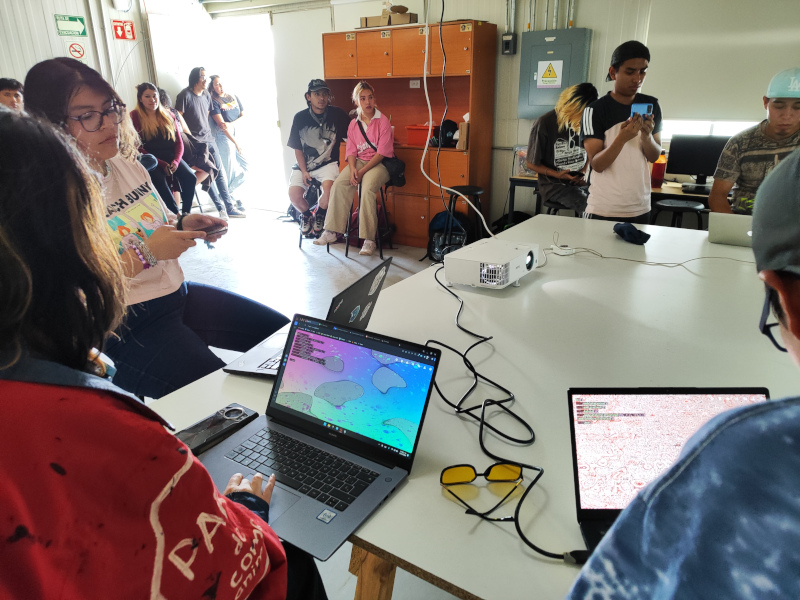
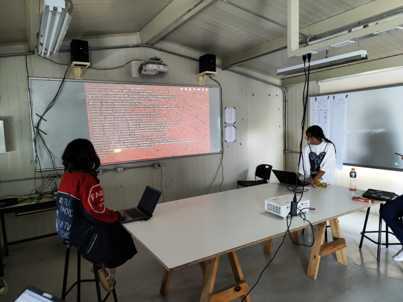
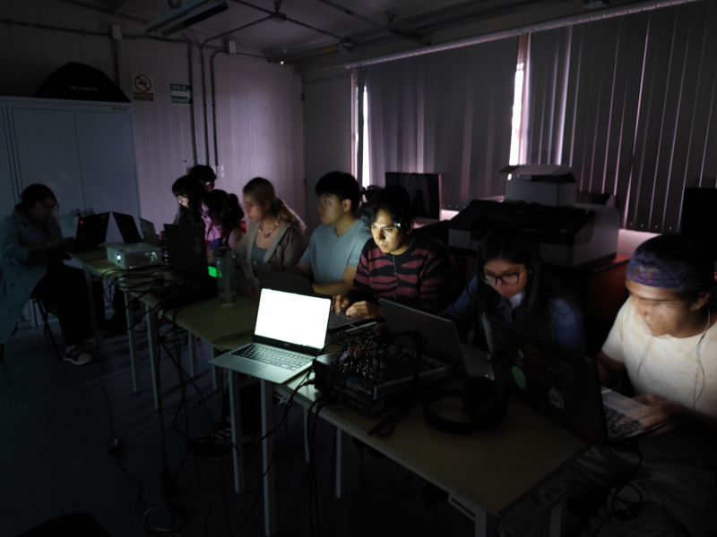
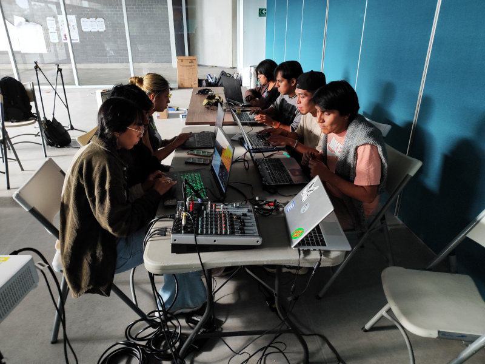

El Colectivo de Creación Audiovisual de la UAM Lerma C.C.A.V.U.L. está formado por alumnos y alumnas de la Licenciatura de Arte y Comunicación Digitales de la Universidad Autónoma Metropolitana Unidad Lerma.
C.C.A.V.U.L. surge en octubre del 2023 en el contexto de la UEA optativa del Talase Creación audiovisual con lenguajes de programación impartida en la Licenciatura. Desde entonces tiene su sede en las aulas de la UAM Lerma y se ha presentado en diversas ocasiones en Lerma y la Ciudad de México.


